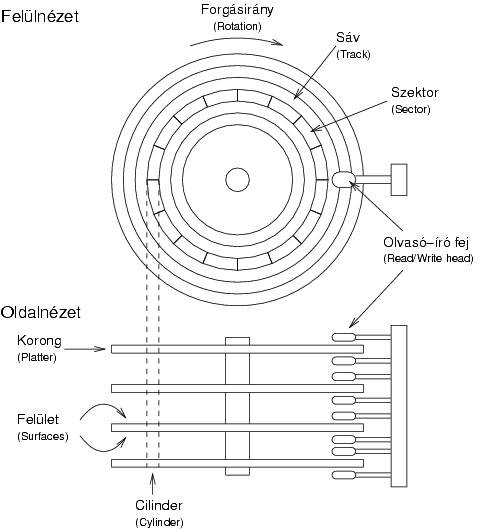
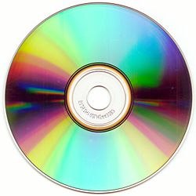

Nagy kapacitású háttértárolók. A merevlemezes és az optikai tárolók főbb jellemzői, fajtái és összehasonlításuk. (Hard Disk, CD-ROM)
Kidolgozott Információtechnológiai érettségi tétel
A winchester főbb jellemzői: zárt, ténylegesen merev, kompakt csomagolás, pára és pormentes, bírja a nagy írássűrűséget. Általában nem egy, hanem több egymással párhuzamos lemezből áll, közöttük mint fésűsor közlekednek a fejek. Átlagos elérési idő (1 fizikai szektort mennyi idő alatt talál meg) általában 7-8 ms.
A háttértároló perifériákra két fő okból van szükség:
- az operatív memória kapacitásának kibővítése cserélhető adathordozókkal elvileg végtelenig,
- az adatokat a gép kikapcsolása után bármilyen hosszú ideig képes tárolni, áramellátás nélkül is.

A mágneses jelrögzítés elve, hogy egy nem mágnesezhető mechanikai hordozóanyagra mágnesezhető réteget visznek fel. A mágnesezhető réteg úgy tekinthető, mintha elemi mágnesekből állna, amelyek egy tekercs előtt haladnak el. Ha a tekercsbe megfelelő áramot vezetünk, az elemi mágnesek egyik vagy másik irányba mágneseződnek attól függően, hogy milyen irányú az áram a tekercsben. Az elemi mágnesek ezt az állapotukat hosszú ideig megtartják. Ha ezután a mágneses adathordozót ismét elmozdítjuk egy tekercs előtt, amelyben természetesen nem folyik áram, akkor ezek az elemi mágnesek elhaladva a tekercs előtt, abban feszültséget hoznak létre, indukálnak. Ez az indukált feszültség a rögzített jelnek felel meg, amit a gépben megfelelően felerősítve és átalakítva vezérlésre használhatunk.
A bal oldalon látható kép a merevlemez fizikai feléítését magyarázza el.
Lemezszám: 1-12 db. Alsó indexlemez (szervó v. beállító lemez feladata fejszabályozás).Cilinder: az adattároló lemezfelület azonos számú sávjaiCluster: A FAT táblában a foglaltság jelzése clusterenként történik. A cluster az a legkisebb tárterület, amit a DOS kezel. Egy cluster 1..8 szektor, azaz 0.5..4 kB. (-> egy nagykapacitású fix lemezen egy 20 B-os program ugyanannyi helyet foglal el, mint egy pl. 3.8 KB-os.)Partíció: Egy merevlemezzel rendelkező pc-n max. 4 különböző operációs rendszer lehet. Minden operációs rendszer külön a számára kijelölt területen vagy másnéven partíción helyezkedik el. Az egyes operációs rendszerek csak a saját partíciójukat tudják kezelni. A számítógép bekapcsoláskor azt a partíciót indítja, amelyik aktív állapotban van. Lehetőség van arra is hogy egy operációs rendszer használja az egész területet. A particiókra vonatkozó információ, az 1.szektor, 1. fej. 1.sávján található. A partíciós tábla a bootrekord része. A DOS partíció mérete 3.3-ig max. 32 MB. (Ok: a FAT tábla 16 bites)
A CD-k gyártása, működési elve
Az írható CD-ken az információt a polikarbonát hordozó alatt elhelyezkedő nagyon vékony, filmszerű szerves festékrétegbe égetik be. Erre a célra infravörös (780 nm-es) lézerdiódákat alkalmaznak. Ezek fényét fókuszálva a festékrétegben maradandó, kis tűszerű kráterek (pitek), elváltozások keletkeznek. Az információ kiolvasása szintén lézerfény segítségével történik, csak csökkentett energiaszinttel. A lemez információhordozó-rétegéről visszaverődő fényt az optoelektronikai fejegység érzékeli és dolgozza fel. Amikor az olvasófej egy pit felett van, akkor csökkent fényintenzitást érzékel, mivel a fókuszált lézerfény pitről visszaverődő része gyengítő interferenciába lép a környező landról visszaverődő fénnyel. Land fölött a fény nagymértékben visszaverődik. A CD kódrendszerében a pit-land vagy land-pit átmenet (azaz a fényerősség hirtelen változása) jelenti az 1-et, az átmenet hiánya (amikor nem változik a visszavert fény mennyisége) pedig a 0-t.
A CD-ket többféle szempont alapján lehet csoportosítani.
Fizikai felépítés szerint:
- préseléssel készült (csak olvasható)
- CD-R (írható)
- CD-RW (újraírható, azaz letörölhető és rá új adatok írhatók)
Tárolható adat szerint:
- CD-DA (CD-Digital Audio, hanganyag tárolására)
- CD+G (CD+Graphics)
- CD+MIDI
- CD Text (a hanganyag mellett szöveges album és száminformációkat is tartalmaz(hat))
- CD-Extra (más néven Cd Plus, hanganyagot és – általában ehhez kapcsolódó – számítógépes adatokat is tartalmaz)
- HDCD (High Definition CD)
- CD-ROM (adatok tárolására)
- CD-ROM/XA
- CD-i (interaktív CD)
- PhotoCD
- VideoCD
- SVCD (Super VideoCD)
- érettségi.com: forrásanyag a tartalomhoz
- Wikipédia: Forrásanyag a CD-khez
- Merevlemez kép
- Merevlemez felépítése